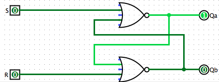
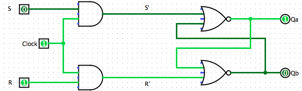
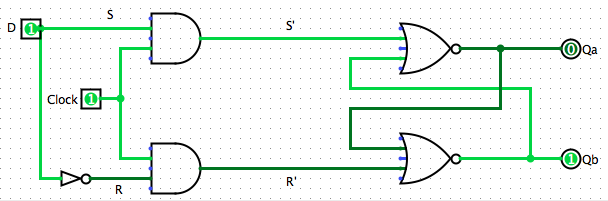
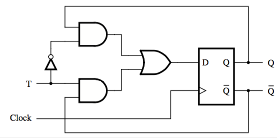
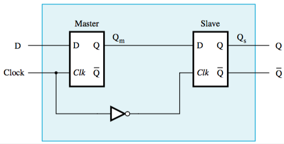

SR Latch
Circuit of two NOR gates that can ‘remember’ which input was most recently 1 (in this case, R).
The state R = S = 0 is undefined, the state R = S = 1 is unused.

Gated SR Latch
When the time at which to set or reset is controlled by a clock instead of the inputs
When the clock is at 1, signals R’ and S’ change based on R and S.
When the clock is at 0, no change in the state can happen.
Implementation with NAND gates? Just replace every gate with a NAND. It works. Trust me, I’m a computer scientist.

Gated D latch
Instead of using two separate inputs, you can derive the inputs from one input, D (data):

T flip-flop
changes state every clock cycle if its input T is 1 — “toggles state”

Master-slave flip-flop
What if you don’t want a change in the input to be immediately propagated to the output?
Connect two gated D latches to create a master-slave flip-flop.
While clock is 1, master is affected by changes in D but slave stays in the same state.
When clock changes from 1 to 0, output is propagated to the slave.
